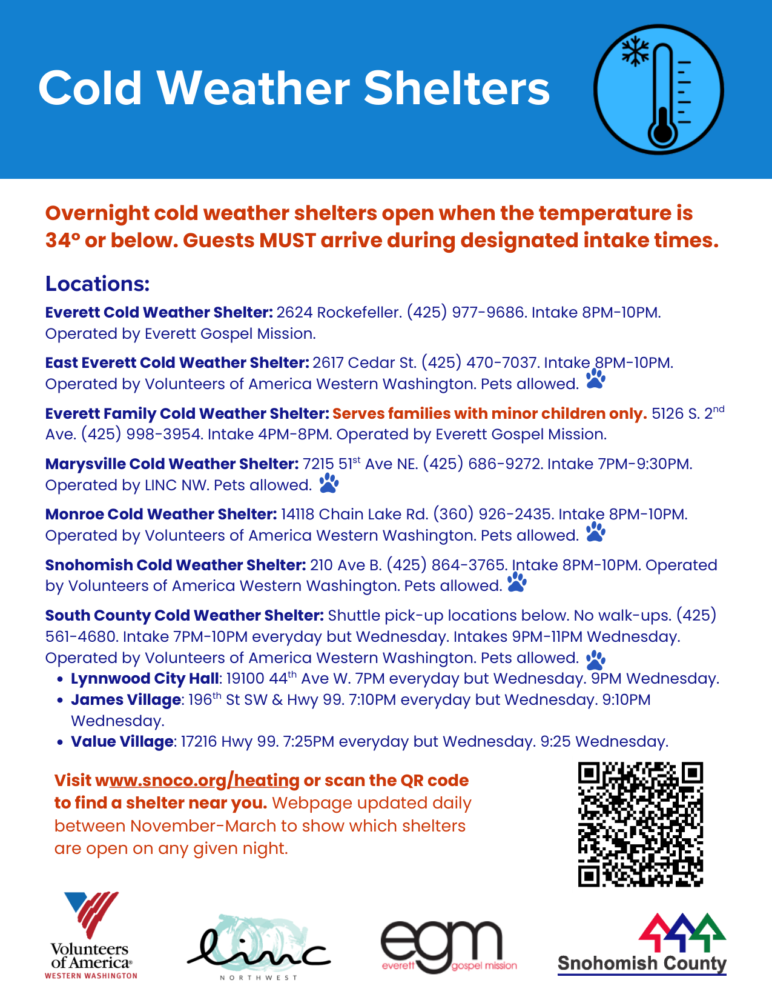
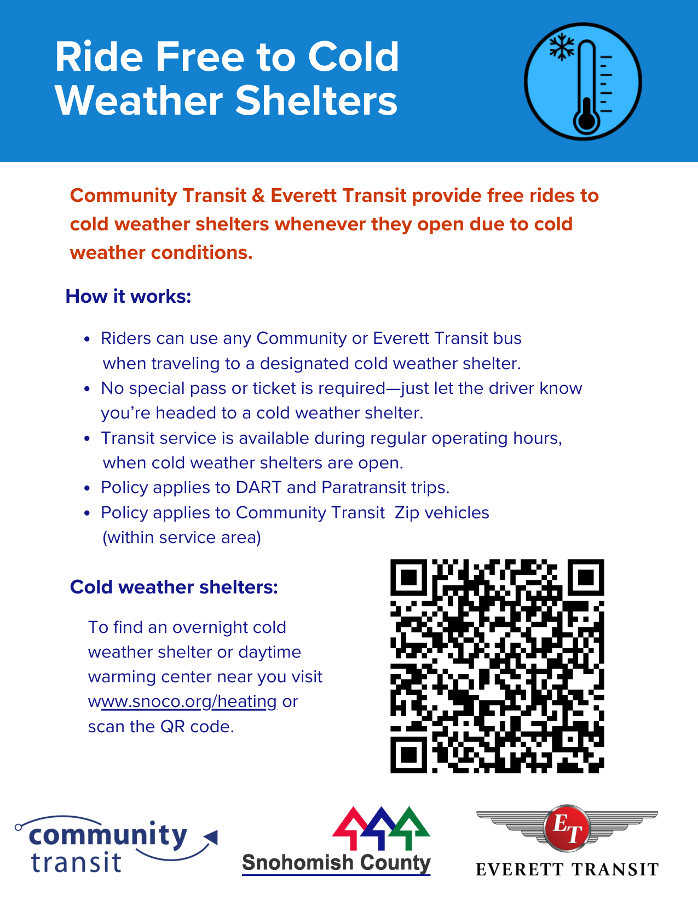

Crisis Cleanup connects flood-affected residents with volunteers from local relief organizations, community groups, and faith communities who can assist with:
- Cut fallen trees
- Drywall, flooring & appliance removal
- Tarping roofs
- Mold mitigation
All services are free, but service is not guaranteed due to overwhelming need.
Washington Floods Home Cleanup Hotline: (844) 965-1386
Hotline open through January 2, 2026.
PLEASE NOTE: This hotline CANNOT assist with social services such as food, clothing, shelter, insurance, or questions about FEMA registration. Volunteers work free of charge
show full message
and provide the tools and equipment necessary to complete the work.
www.crisiscleanup.org
Carnegie Resource Center — Community Resource Guide for Snohomish County (December 2025 – Revised)
Carnegie Resource Center
3001 Oakes Avenue, Everett, WA 98201
Phone: (425) 434-4680
Fax: (833) 520-0744
E-Mail: carnegieinfo@p-h-s.com
Hours: Monday – Friday, 9:00 AM – 4:30 PM (Walk-in Service)
For an online viewable version of the Carnegie calendar and the monthly Community Resource Guide, visit: https://pioneerhumanservices.org/carnegie-resource-center/
The Carnegie Resource Center is a gateway to resources and training opportunities related to mental health counseling, substance use
show full message
disorder treatment, employment services, housing enrollment, veteran programs, health insurance navigation, and public benefit enrollments. All services are coordinated by Pioneer Human Services.
The program offers a one-stop location where local residents can engage with several service providers. Partner agencies include: Snohomish County Human Services, Community Health Plan of WA, DOL2Go, Lifeline Program, New Eyes Voucher Program, The Day After Prison, Domestic Violence Services of Snohomish County, Volunteers of America Western WA, Veteran Affairs Supportive Housing (VASH), Orion Industries, TRAC Associates, Veterans Affairs Homeless Primary Care Team (HPACT), Compass Career Solutions, Ideal Options, Center for Human Services, Evergreen Recovery Centers HOST Program, Snohomish County LEAD, Snohomish County Legal Services, Molina, Everett Recovery Cafe, Housing Justice Project, Lutheran Community Services Northwest, YWCA, United Healthcare, and more.
Program Contacts:
Rebecca Nelson, Director — Rebecca.Nelson@p-h-s.com
Shantel Harris, Social Services Coordinator — Shantel.Harris@p-h-s.com
www.pioneerhumanservices.org | (425) 434-4680
Guide contents include: CRC Program Overview, CRC Informational/Event Flyers, Holiday Resources, Emergency Crisis Services/Transportation, ORCA – Snohomish County Enrollment Locations, Cold Weather Shelters & Warming Centers, Shelters, Housing, Healthcare, Family & Community Resource & Senior Centers, Laundry Outreach/Public Showers, Clothing, Everett Free Meals/County Hot Meals, Food Banks/Pantries & General Food Resources, Legal Assistance/Flyers, Household Assistance, Government Lifeline Program & Information, Employment/Job Assistance Training, Fair Chance Employers Information/Resources, Veteran Resources, Behavioral Health Services, Treatment Services/Detox/Harm Reduction & Recovery Support, Refugee & Immigration Resources/State & Federal Agencies.
**Flood Safety** (Snohomish County)
When a flood threatens:
- Keep informed. Pay attention to safety messages from official sources such as the National Weather Service and local government.
- Move to higher ground. Don't camp in flood prone areas.
- Get out of areas subject to flooding: dips, low spots, floodplains, riverbanks, etc.
- Stay out of areas with lots of trees during wind and heavy rain or high water.
- Flooding season in Snohomish County typically begins in October and lasts into spring.
During a flood:
- Obey evacuation orders.
- Avoid areas subject to sudden flooding.
- Do not
show full message
walk, swim or drive through flood waters. Turn Around, Don't Drown!
- Just six inches of moving water can knock you down; one foot can sweep your vehicle away.
Stay Out of Flooded Areas:
- If you notice even a slight rise in water level, seek higher ground immediately.
- If trapped by moving water, move to the highest possible point and call 911.
Sign up for Snohomish County Emergency Alerts: https://www.snoco.org
Monitor the Flooding Page of the Snohomish County Public Safety Hub: https://www.snoco.org
---
**Cold Weather Shelters** (Snohomish County)
Overnight cold weather shelters open when the temperature is 34° or below. Guests MUST arrive during designated intake times.
Locations:
**Everett Cold Weather Shelter:** 2624 Rockefeller. (425) 977-9686. Intake 8PM–10PM. Operated by Everett Gospel Mission.
**East Everett Cold Weather Shelter:** 2617 Cedar St. (425) 470-7037. Intake 8PM–10PM. Operated by Volunteers of America Western Washington. Pets allowed.
**Everett Family Cold Weather Shelter:** Serves families with minor children only. 5126 S. 2nd Ave. (425) 998-3954. Intake 4PM–8PM. Operated by Everett Gospel Mission.
**Marysville Cold Weather Shelter:** 7215 51st Ave NE. (425) 686-9272. Intake 7PM–9:30PM. Operated by LINC NW. Pets allowed.
**Monroe Cold Weather Shelter:** 14118 Chain Lake Rd. (360) 926-2435. Intake 8PM–10PM. Operated by Volunteers of America Western Washington. Pets allowed.
**Snohomish Cold Weather Shelter:** 210 Ave B. (425) 864-3765. Intake 8PM–10PM. Operated by Volunteers of America Western Washington. Pets allowed.
**South County Cold Weather Shelter:** Shuttle pick-up locations below. No walk-ups. (425) 561-4680. Intake 7PM–10PM everyday but Wednesday. Intakes 9PM–11PM Wednesday. Operated by Volunteers of America Western Washington. Pets allowed.
- Lynnwood City Hall: 19100 44th Ave W. 7PM everyday but Wednesday. 9PM Wednesday.
- James Village: 196th St SW & Hwy 99. 7:10PM everyday but Wednesday. 9:10PM Wednesday.
- Value Village: 17216 Hwy 99. 7:25PM everyday but Wednesday. 9:25PM Wednesday.
Visit www.snoco.org/heating to find a shelter near you. Webpage updated daily between November–March to show which shelters are open on any given night.
---
**Ride Free to Cold Weather Shelters**
Community Transit & Everett Transit provide free rides to cold weather shelters whenever they open due to cold weather conditions.
How it works:
- Riders can use any Community or Everett Transit bus when traveling to a designated cold weather shelter.
- No special pass or ticket is required—just let the driver know you're headed to a cold weather shelter.
- Transit service is available during regular operating hours, when cold weather shelters are open.
- Policy applies to DART and Paratransit trips.
- Policy applies to Community Transit Zip vehicles (within service area).
To find an overnight cold weather shelter or daytime warming center near you visit www.snoco.org/heating.


1 more image

The Hunthausen Fund is for homeless individuals and families seeking one-time move-in cost assistance. The program guidelines are as follows:
- Applicants must be homeless, and have identified housing, been approved, and ready to move-in
- Applications must be completed with a Case Manager
- The assistance amount has a grant portion, and a loan portion. Recipients are asked to pay back 50% of the assistance so other homeless households can continue to benefit from the services in the future
- Applicants may move-in to King County, Pierce County, or Snohomish County public or private housing
show full message
(cannot assist with move-in to transitional housing at this time)
Contact:
Victoria Anderson: (425) 679-0340, VictoriaA@ccsww.org
James Tolbert: (253) 850-2505, JamesT@ccsww.org
Catholic Community Services of King County


-Revised_p1.png)
-Revised_p2.png)
-Revised_p3.png)


_p1.png)
_p2.png)
_p3.png)


 (1) (1).png)

_p1.png)


_p1.png)
_p2.png)
_p1.png)
_p2.png)
_p3.png)

_p1.png)

_p1.png)
_p2.png)


_p1.png)
_p2.png)
_p1.png)
_p1.png)


-Flood Resource Revision_p1.png)
-Flood Resource Revision_p2.png)
-Flood Resource Revision_p3.png)